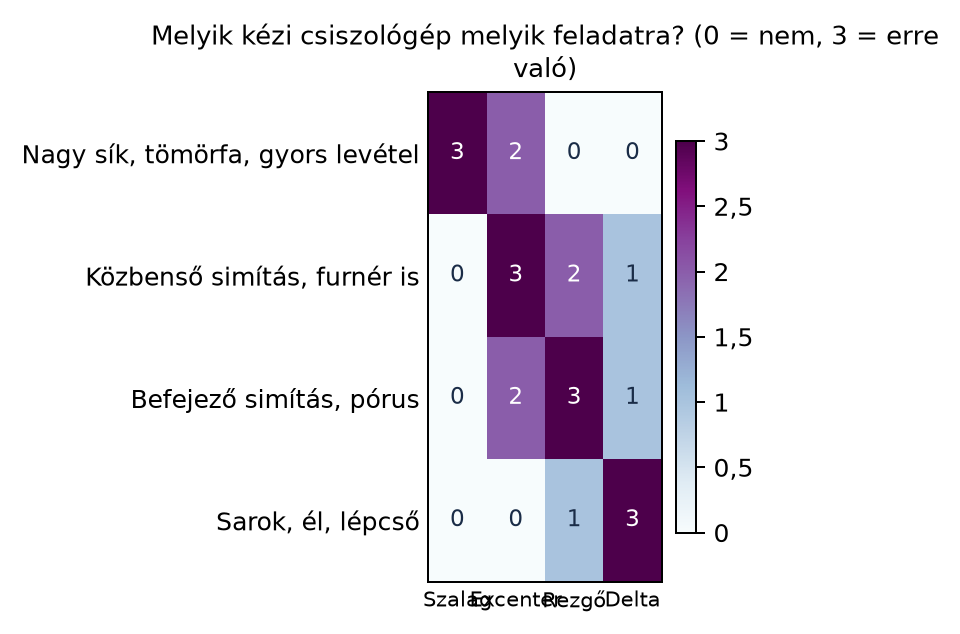

Egy asztalos műhelyben gyakori helyzet: a vevő konyhabútorának ajtaján a régi lakk megsérül, és a felszín hosszú, lapos csiszolást kíván. A munkaasztalon többféle kézi csiszológép van: szalagcsiszoló, excentercsiszoló, rezgőcsiszoló és delta. Ha rossz gépet választasz, mély karcolást, hullámos felületet vagy lassú munkát kapsz. Ha pedig nem csatlakoztatod az elszívót, a fapor a levegőbe kerül, és a keményfa-por rákkeltő hatású lehet. Ugyanígy a pneumatikus szegőgépek és csiszolók gyors munkát adnak, de rossz légnyomással balesetet vagy tönkretett munkadarabot okoznak. Ezért fontos a gépek fajtáinak, működésének, biztonsági előírásainak és az elszívás szabályainak ismerete.
Képzeld el, hogy egy öltözőszekrény ajtajának furnérozott lapját kell előkészíteni lakkozáshoz. A lap 600 mm széles és 1200 mm hosszú, felülete egyenletes, de a régi bevonat enyhén hullámos. Az asztalos a régi bevonatot excentercsiszolóval, P120-as koronggal, óvatosan távolítja el (szalagcsiszolót furnéron nem használunk, mert átcsiszolja a vékony furnért), majd P180-nal finomít, végül rezgőcsiszolóval vagy kézzel P220–P240-nel simítja a pórusokat. A gépet porszívóhoz csatlakoztatja, amely a motor indításakor automatikusan bekapcsol. A porszívó szűrője az M vagy H porosztályú követelménynek felel meg, így a finom faport is visszatartja. A sarokléceknél delta csiszolót használ, mert a háromszög alakú talprésze beér a sarkokba. A sűrített levegős szegőgéppel gyorsan rögzíti a hátfalat, de előbb ellenőrzi a kompresszor nyomását.
Az alábbi táblázatos ábra a gépválasztás logikáját mutatja: melyik gép melyik feladatra való.

Az ábra a négy géptípust egymás mellett, választási lehetőségként mutatja: először meg kell határozni a feladatot, majd ahhoz választunk géptípust. A tényleges gépmodellt a műszaki adatlap, a fordulatszám és a rezgésérték alapján kell kiválasztani.
Definíció. A kézi csiszológép elektromos vagy sűrített levegős kéziszerszám, amely csiszolóanyaggal forgó vagy rezgő mozgást végez a fa felületén. Feladata az anyaglevétel, a felület simítása és a bevonatok előkészítése.
A gyakorlatban négy fő típust különböztetünk meg:
Szabály. A csiszológép kiválasztásakor a felület anyagát, méretét, állapotát és a kívánt felületi minőséget kell figyelembe venni. A durva anyaglevételhez szalagcsiszoló, a közepes simításhoz excentercsiszoló, a finom simításhoz rezgőcsiszoló, a sarkokhoz delta csiszoló való. A csiszolóanyag szemcseméretét a feladathoz kell igazítani (durva: P40–P80, közepes: P100–P150, finom: P180–P320, tájékoztató értékek, ellenőrizendő: csiszolóanyag gyártói adatlap).
Definíció. A kézi gépekhez használt
porelszívó olyan porszívó berendezés, amely a csiszológép
csiszolóporát közvetlenül a keletkezés helyén elszívja. A faipari por
elszívására M vagy H porosztályú porszívó ajánlott,
mert a fapor (különösen a keményfa por) egészségkárosító. A porosztály
jelölése a gépen és a szűrőn látható:
- L osztály: alacsony kockázatú porra,
- M osztály: közepes kockázatú porra,
- H osztály: magas kockázatú porra (pl. rákkeltő
anyagokra).
Figyelem. A keményfa-por (tölgy, bükk) rákkeltő hatású lehet. A faipari csiszolásnál ezért M, keményfa-por esetén lehetőség szerint H osztályú elszívó használata javasolt. A pontos követelményt a hatályos jogszabály és a munkáltató kockázatértékelése határozza meg (ellenőrizendő: határérték és besorolás).
A porszívó fontos jellemzője az automatikus indítás: a porszívó konnektora fogadja a csiszológép dugóját, és a gép bekapcsolásakor a porszívó is elindul, kikapcsoláskor néhány másodperces késleltetéssel leáll, hogy a tömlőből kiszívja a maradék port. Ezzel nem felejtjük el bekapcsolni az elszívót.
Definíció. A pneumatikus kézi
kisgépek sűrített levegővel működő kéziszerszámok. A faiparban
leggyakoribbak:
- Kapcsozógép: U alakú kapcsokat lő a fába, gyors
rögzítéshez (pl. hátlemez, kárpitos munkák).
- Szegőgép: szögeket lő be, jellemzően 15–64 mm
hosszúságú szögeket (tájékoztató, gyártói adat).
- Pneumatikus csiszoló: kis kézi csiszológép excenter
vagy rezgő mozgással, helyszíni finom munkákhoz, nehezen elérhető
helyekhez.
A sűrített levegő forrása a kompresszor, amely levegőt sűrít, és nyomás alatt tartja egy tartályban. A pneumatikus kisgépek üzemi nyomása jellemzően 4–8 bar (ellenőrizendő: gépkönyv). A levegőnek tisztának, olajozottnak vagy olajmentesnek kell lennie a gép típusától függően.
Szalagcsiszoló üzemeltetése: 1. Ellenőrizd a csiszolószalag állapotát, szakadásmentességét, a szalagfeszességet. 2. Húzd meg a szalagközpontosító beállítót, hogy a szalag futása középen maradjon. 3. Indítás előtt emeld fel a gépet a felületről, mert a hirtelen indulás beáshatja a szalagot a fába. 4. A felületre helyezve haladj egyenletes sebességgel, a szalag futásirányába. 5. Ne tartsd egy helyben a gépet, mert mély barázdát vág. 6. Leállításkor várd meg, amíg a szalag megáll, mielőtt leteszed a gépet.
Excentercsiszoló üzemeltetése: 1. Válaszd ki a megfelelő szemcseméretű csiszolókorongot, és tépőzárral rögzítsd a talprészen. 2. Csatlakoztasd az elszívótömlőt a gép csonkjához. 3. Indítsd a gépet a felületen, ne levegőben, hogy ne ugorjon. 4. Lassan, egyenletes mozgással vezesd, enyhe nyomással. A gép súlya elegendő, erősen nyomni káros. 5. Ne billentsd meg a tányért, mert karcolja az élet. 6. Cseréld a csiszolókorongot, ha eltömődött vagy a szemcse tompult.
Rezgőcsiszoló üzemeltetése: 1. A csiszolólapot tépőzárral vagy szorítóval rögzítsd. 2. A gépet laposan fektesd a felületre, és csak annyi nyomást adj, hogy a rezgés átvihessen. 3. Vezesd lassan, átfedő csíkokban, hogy ne maradjon sávos minta. 4. A delta csiszolónál a háromszög talp éleit és csúcsát használd a sarkokig.
Az ábra egy csiszolószemcse pályáját mutatja: a szalag párhuzamos karcokat húz, a rezgőcsiszoló kis köröket ismétel, az excentercsiszoló forgó és excentrikus mozgása nem ismétlődő pályát ad, ezért karcmentesebb. Az interaktív változatban a vezetési sebesség állítható; ha a gépet egy helyben tartod, a szalag barázdát vés.
A pneumatikus kapcsozógép és szegőgép működése egyszerű: a sűrített levegő egy dugattyút mozgat, amely a kapcsot vagy szöget a fába hajtja. A gép orrát a felületre kell helyezni, majd a ravaszt meghúzni. A lövés előtt a munkadarabot stabilan kell rögzíteni, mert a visszalökő erő elmozdíthatja a darabot.
Sűrített levegő biztonsága.
- Tilos a sűrített levegőt emberre, ruhára vagy bőrre
irányítani, mert a nagy nyomású levegő súlyos balesetet (légembólia, bőr
alá fújás) okozhat.
- A pneumatikus gépet mindig a kompresszorhoz csatlakoztatva, a gyártó
által megadott üzemi nyomáson szabad használni. A túl nagy nyomás
szétvetheti a gépet, a túl kicsi nyomás rossz lövési mélységet ad.
- A gépet soha ne irányítsd magadra vagy másra, még üresen sem, mert a
szög vagy kapocs kirepülhet.
- A levegőtömlőt ne hagyd éles helyen, ne állj rá, és ne csatlakoztasd
feszített tömlővel.
- A pneumatikus gépet használat után le kell csatlakoztatni, és a
tartály nyomását a kompresszoron le kell ereszteni.
- A tanuló csak egyes (szekvenciális) kioldású üzemmódban dolgozzon
(ellenőrizendő: gépkönyv); a gépet ne vidd ujjal a ravaszon. Elakadás
elhárítása, tárfeltöltés és orrcsere előtt csatlakoztasd le a
levegőtömlőt.
Gépbiztonság. Minden kézi kisgép művelet betanított, felügyelt tanulónak szól; védőberendezés nélkül, egyedül, fáradtan ne végezd. A kézi csiszológépeknél viselj légzésvédőt (FFP2 vagy FFP3 maszkot), védőszemüveget és hallásvédőt a zaj és a vibráció miatt (ellenőrizendő: a gép zaj- és rezgésadata). A pneumatikus gépeknél védőszemüveg kötelező, mert a szög vagy kapocs visszapattanhat. A forgó vagy rezgő szerszám közelében tilos kesztyűt viselni, mert a kesztyűt behúzhatja a gép, súlyos kézsérülést okozva.
Indítás előtti ellenőrzőlista kézi csiszológéphez: 1. Ellenőrizd a gép külső állapotát, a kábel és a csatlakozó épségét. 2. Ellenőrizd a csiszolóanyag rögzítését (tépőzár, szorító). 3. Ellenőrizd az elszívó tömlő csatlakozását és a porszívó porzsákját/szűrőjét. 4. Ellenőrizd, hogy a munkadarab stabilan rögzítve van-e. 5. Ellenőrizd, hogy a munkaterület tiszta, nincs éghető anyag a szikraforrás közelében. 6. Győződj meg róla, hogy a gép kapcsolója kikapcsolt állapotban van, mielőtt a hálózatra csatlakoztatod.
Rezgésexpozíció röviden. A kézi csiszológépek rezgést adnak a kézre, ami hosszú távon károsíthatja az ereket, idegeket és ízületeket (fehérujj-szindróma). A munkáltató köteles mérni vagy becsülni a rezgés napi expozíciót (A(8) érték), és betartani a határértékeket (ellenőrizendő: jogszabályban rögzített expozíciós határ- és intézkedési értékek). A gép adattáblája és gépkönyve tartalmazza a rezgésgyorsulás (m/s²) értékét. A tanuló a gyakorlatban annyit tehet, hogy rövid ideig használja a gépet, gyakran szünetet tart, és éles szerszámot használ, mert a tompa csiszolóanyag növeli a kellő nyomást, ezzel a rezgést is.
Cél: A furnérozott lap felületének előkészítése lakkozáshoz, P120–P240 szemcseméretű csiszolókorongokkal.
Anyagok: furnérozott MDF lap (600 × 1200 mm), excentercsiszoló korongok (P120, P180, P240), takarószalag a szélek védelméhez.
Gépek, szerszámok: excentercsiszoló (125 mm tányér), M osztályú porszívó automatikus indítással, elszívótömlő.
Egyéni védőeszközök: FFP2 vagy FFP3 légzésvédő, védőszemüveg, hallásvédő, nem kesztyű (a forgó tányér miatt).
Indítás előtti ellenőrzés: a tányér tépőzára tiszta, a korong jól tapad; az elszívó tömlő csatlakozása szoros; a porszívó szűrője nem telt; a munkadarab rögzítve van; a gép kapcsolója ki.
Műveletsor: 1. Helyezd a lapot a munkapadra, rögzítsd leszorítóval vagy csúszásgátló alátéttel. – ellenőrzés: a lap nem mozdul el kézzel. 2. Ragassz takarószalagot a lap éleire, ha az éleket nem akarod csiszolni. – ellenőrzés: a szalag egyenesen fekszik, nem gyűrődik. 3. Helyezd fel a P120-as korongot a tányérra. – ellenőrzés: a korong központosan illeszkedik. 4. Csatlakoztasd az elszívót a géphez, majd az elektromos hálózatra. A porszívó automatikus indítását a gyártó szerint állítsd be. – ellenőrzés: a porszívó a gép indításakor bekapcsol. 5. Indítsd a gépet a felületen, kis fordulaton, majd emeld a munkafordulatra. – ellenőrzés: a gép nem ugrik, nincs erős rezgés. 6. Vezesd a gépet lassan, átfedő csíkokban, a lap hosszában, majd keresztben. – ellenőrzés: nincs egy helyben álló korong, a felület egyenletes. 7. Cseréld a korongot P180-asra, és ismételd meg a csiszolást. – ellenőrzés: az előző durvább karcok eltűntek. 8. Végezz befejező csiszolást P240-es koronggal. – ellenőrzés: a felület tapintása egyenletes, nincs mély karc. 9. Kapcsold ki a gépet, várd meg a tányér megállását, majd tedd le. – ellenőrzés: a porszívó néhány másodperc múlva leáll. 10. Szemrevételezéssel ellenőrizd a felületet, távolítsd el a védőszalagot. – ellenőrzés: nincs kimaradt folt, a szélek épek.
A csiszolt felületet szemrevételezéssel és tapintással ellenőrizzük. A furnérozott lapon nem lehet mély karc, a furnér nem lehet átdörzsölve, és az élek nem lehetnek lekerekítettek, hacsak az a cél. A felület legyen egyenletesen matt, a szálak ne álljanak ki. Az elszívó hatékonyságát úgy ellenőrizhetjük, hogy csiszolás közben a levegőben nem látszik nagy porkoncentráció, a munkadarabon alig marad por. Ha eltérést találunk, a megfelelő szemcseméretű koronggal, csökkentett nyomással újra kell csiszolni. A pneumatikus szegőgép lövési mélységét próbadarabon kell ellenőrizni, a szögfejnek a felülettel egy szintbe kell kerülnie (tájékoztató, gyártói beállítás).
Hiba: A furnér átdörzsölődik a lap közepén. Ok: túl durva csiszolószemcse, túl nagy kézi nyomás, vagy egy helyben való csiszolás. Helyes gyakorlat: finomabb szemcsét (P180 felett) használj, engedd a gépet saját súlyával dolgozni, állandó mozgással.
Hiba: A felület hullámos, sávos. Ok: a gép egyenetlen sebességű vezetése, túl gyors haladás, vagy a csiszolókorong kopott. Helyes gyakorlat: egyenletes, lassú mozgás, átfedő csíkok, rendszeres korongcsere.
Hiba: A csiszológép rángat, ugrik. Ok: a csiszolókorong nem központos, a tányér tépőzára szennyezett, vagy a gép fordulatszáma túl magas. Helyes gyakorlat: ellenőrizd a korong központozását, tisztítsd meg a tányért, állítsd be a gépkönyv szerinti fordulatszámot.
Hiba: A pneumatikus szegőgép nem süllyeszti a szöget teljesen, vagy túl mélyre lövi. Ok: rossz légnyomás (túl alacsony vagy túl magas), kopott ütköző, vagy nem megfelelő szöghossz. Helyes gyakorlat: ellenőrizd a kompresszor nyomását a gépkönyv szerint, próbadarabon állítsd be a mélységet, cseréld az ütközőt, ha kopott.
Hiba: A porelszívó nem szív rendesen. Ok: megtelt porzsák, eltömődött szűrő, szivárgó tömlő, vagy a porszívó porosztálya nem megfelelő a feladathoz. Helyes gyakorlat: rendszeresen ürítsd a porzsákot, tisztítsd a szűrőt, ellenőrizd a tömlő épségét, használj M vagy H osztályú porszívót faipari porhoz.
Egy asztalos helyszíni szereléskor egy beépített gardróbszekrény ajtaján javította a felületet. Az ügyfél lakásában dolgozott, ezért fontos volt, hogy ne porozzon tele a szobát. Volt nála excentercsiszoló és egy M osztályú, automatikus indítású porszívó. A porszívóval elszívta a csiszolási port, a gépet folyamatosan mozgatta, és a korongokat a kopás szerint cserélte. A munka után a szobában alig maradt por; a csiszolást végző asztalos ennek ellenére FFP2 légzésvédőt viselt, mert az elszívás a port nem fogja fel teljesen. A javítás gyorsan elkészült, és a vevő elégedett volt, mert a lakása tiszta maradt. Tanulság: a megfelelő elszívó és a gépválasztás nemcsak egészségvédelmi kérdés, hanem a szakmai minőség része is.
1. feladat (A)
Sorold fel a négy fő kézi csiszológéptípust, és írd le egy-egy jellemző
alkalmazásukat.
2. feladat (A)
Milyen porosztályú porszívót választanál keményfa (tölgy) csiszolásához?
Indokold meg.
3. feladat (B)
Adott egy 1200 × 600 mm-es furnérozott MDF lap, amelyet lakkozáshoz kell
előkészíteni. Melyik csiszológépet választanád a durva, a közepes és a
finom csiszoláshoz? Add meg a szemcseméret-tartományokat is a
tájékoztató értékek alapján.
4. feladat (B)
Írd le lépésenként, hogyan csatlakoztatod az excentercsiszolót egy M
osztályú porszívóhoz automatikus indítással, és mi az indítás előtti
ellenőrzés menete.
5. feladat (C)
Egy műhelyben a dolgozó szalagcsiszolóval durván csiszol egy furnérozott
ollós csapos szekrényajtót, erősen nyomja a gépet, és nem használ
elszívót. Milyen hibákat követ el, és mi lehet a következmény? Mi lenne
a helyes munkamódszer?
6. feladat (D)
Készíts ellenőrzőlistát egy pneumatikus kapcsozógép üzembe helyezéséhez
(kompresszor, nyomás, gép, munkadarab, egyéni védőeszköz). A listát a
gyakorlati munka során használd.
Önellenőrzés – válaszok
Feladatok megoldásai
Ebben az alfejezetben megismertük a kézi csiszológépek fő típusait és azok alkalmazását. A szalagcsiszoló nagy anyaglevételre, az excentercsiszoló közepes simításra, a rezgőcsiszoló finom felületre, a delta csiszoló sarkokhoz való. A csiszológéphez mindig csatlakoztatni kell M vagy H porosztályú porszívót, lehetőleg automatikus indítással, hogy a fapor ne kerüljön a levegőbe. A pneumatikus kisgépek (kapcsozógép, szegőgép, csiszoló) sűrített levegővel dolgoznak; a légnyomást a gépkönyv szerint kell beállítani, és a sűrített levegőt tilos emberre irányítani. A kézi csiszológépek rezgést adnak, ezért a rezgésexpozíciót a munkáltató a jogszabályok szerint kezeli, a tanuló pedig rövid munkaciklusokban dolgozzon, és éles csiszolóanyagot használjon. Továbbvitt eredmény: A kisgépes csiszolás és elszívás ismeretét a Csiszolóanyagok és a kézi csiszolás alfejezetben használjuk fel, ahol a csiszolóanyagokkal és a felület-előkészítő technológiával foglalkozunk részletesen.
Az alfejezet a telepített faipari gépek biztonságára vonatkozó európai szabványsorozat (MSZ EN ISO 19085 sorozat – ellenőrizendő; a kézi csiszolókra az MSZ EN 62841 vonatkozik), a kézi motoros szerszámok biztonsági szabványai (MSZ EN 62841 sorozat; csiszolók: 2-4. rész – ellenőrizendő), a porszívók porosztályára vonatkozó szabványok (EN 60335-2-69 – ellenőrizendő) és a rezgésexpozícióra vonatkozó uniós irányelv (2002/44/EK – ellenőrizendő) alapján készült. Minden számszerű technológiai adat (fordulatszám, szalagsebesség, szemcseméret, üzemi nyomás) tájékoztató jellegű, a pontos értékeket a gépkönyv vagy a gyártói adatlap tartalmazza. A fapor határértéke és a porosztályokra vonatkozó jogszabályi követelmények ellenőrizendők.